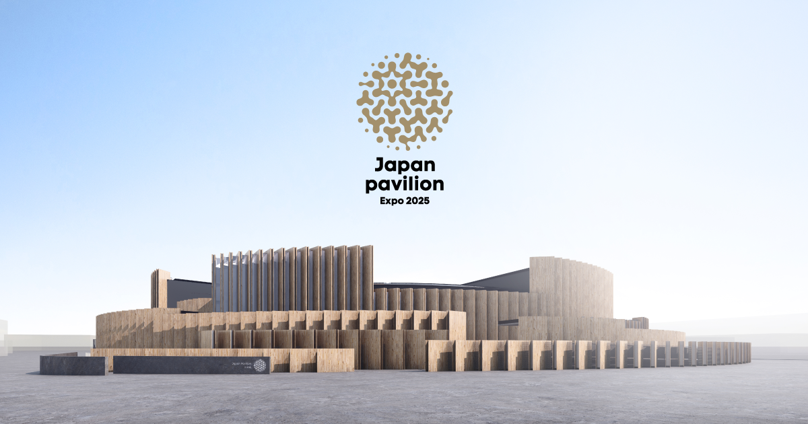
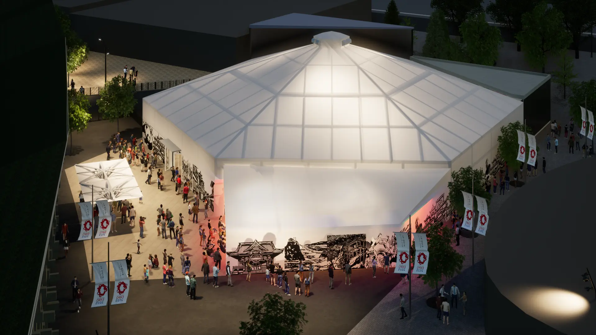

大阪万博 おすすめ国内・民間パビリオン７選
大阪万博の会場は約155ha、展示館であるパビリオンは180以上。
2日かけても全てのパビリオンを回れないほど、会場は広くパビリオンの数も多いです。
180もあるパビリオンの中から厳選した７つの国内・民間パビリオンについて紹介します。
おすすめ国内パビリオン３選

1.日本館
テーマである「いのち輝く未来社会のデザイン」を象徴する存在です。
円環状の構造体が特徴で、「いのちのリレー」を表現しています。
事前予約が必要なプログラムと予約なしで観覧できるプログラムがあります。
公式パビリオンサイトはこちら
2.ウーマンズ パビリオン in collaboration with Cartier
「When women thrive, humanity thrives ～ともに生き、ともに輝く未来へ～」を
コンセプトに掲げ、すべての人々が真に平等に生き尊敬し合い共に歩みながら、能力を発揮できる世界をつくるきっかけを生み出すことを目指します。
公式パビリオンサイトはこちら
3.関西パビリオン
「いのち輝く関西悠久の歴史と現在」をテーマに、関西の悠久の歴史（過去）と現在に触れ
感じてもらうことで、未来の姿を来訪者それぞれに描いてもらいたいという思いが込められています。 公式パビリオンサイトはこちらおすすめ民間パビリオン４選
1. GUNDAM NEXT FUTURE PAVILION
話題の実物大ガンダム像がある、株式会社バンダイナムコホールディングスが出展するパビリオン。
ガンダムを通して、世界中の人々と繋がり、共に未来を考えるきっかけの場となることを目指している。
2150年の夢洲のスペースポートから軌道エレベーターを使って宇宙ステーションまで移動し、宇宙ステーション内を見学するという物語を、８つの空間と映像を通して体験できる。
公式パビリオンサイトはこちら2. 三菱未来館
三菱グループが出展する、「いのち輝く地球を未来に繋ぐ」をコンセプトにするパビリオン。
建物は地下１階から地上２階の３階建てとなっており、地下１階が入り口となっている。
２階に設置されたシアターの大画面に流れる没入感溢れる映像で、深海から宇宙までの旅を体験。
公式パビリオンサイトはこちら3. NTT Pavilion
NTTグループが手掛けるパビリオンのテーマは「PARALLEL TRAVEL」。
NTT Pavilionは、Zone１〜３の３つのゾーンで構成。
「Zone１」では通信手段の変遷を体験できる展示や映像が、「Zone２」ではテクノポップユニット「Perfume」のライブパフォーマンスが３D映像や振動を通して楽しめる。 「Zone３」では、ブース入り口で撮影した全身写真を元に、来場者をバーチャル上に再現した「Another Me」がディスプレイに表示される。「Another Me」を活用した、様々な演出が体験できるのも魅力だ。
公式パビリオンサイトはこちら4. 住友館
「さあ、森からはじまる未来へ」をテーマにしたパビリオン。
来場者はランタンを手に、パビリオン内の擬似的に再現された森の中を冒険できる。
映像で映し出された動物との出会いや、ランタンを使った演出などを体験しながら森を進むと、「パフォーミングシアター」へと辿り着く。
そこでは、冒険してきた森が題材となった物語を、映像・演者・音が融合した大迫力の演出を楽しめる。
公式パビリオンサイトはこちら